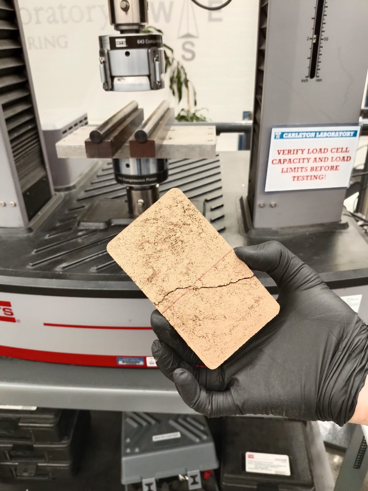
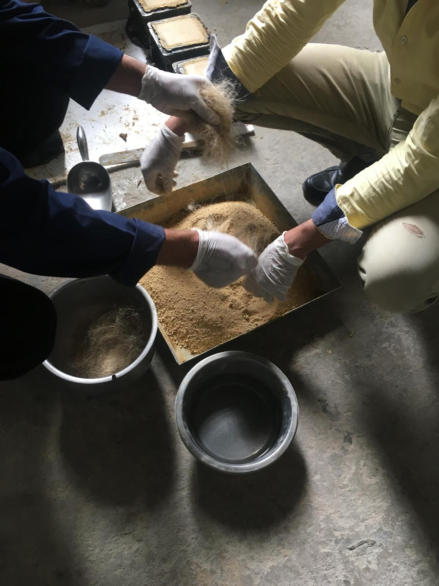
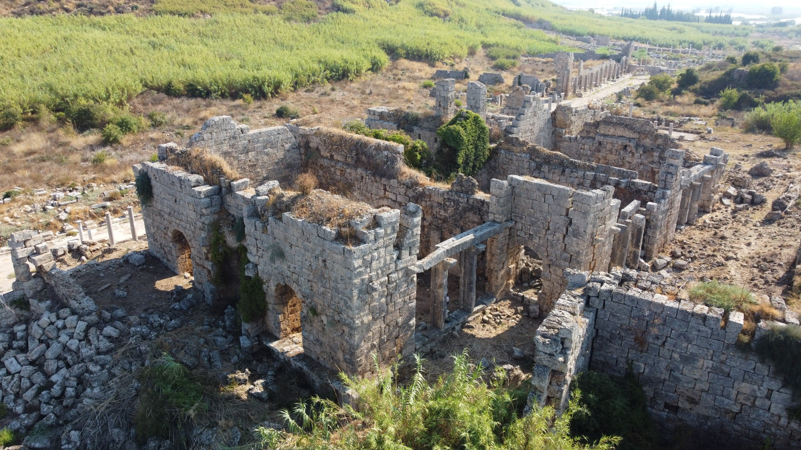
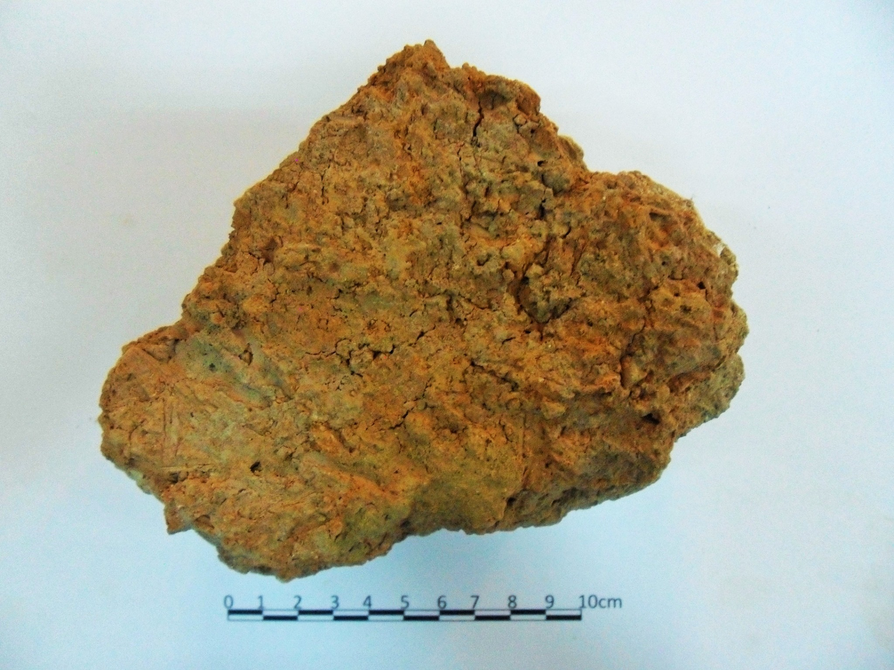
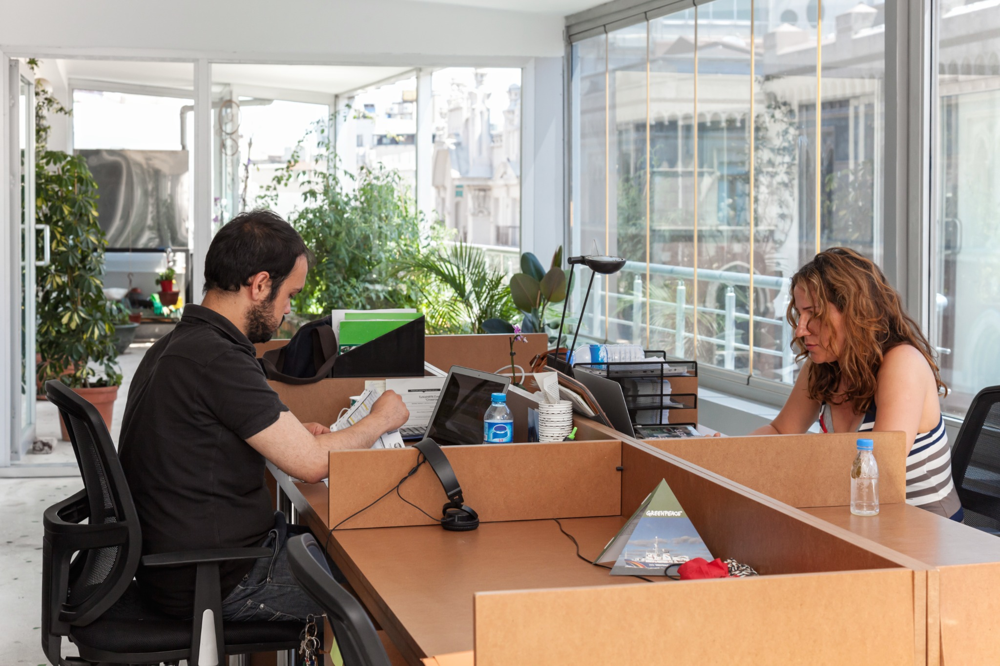
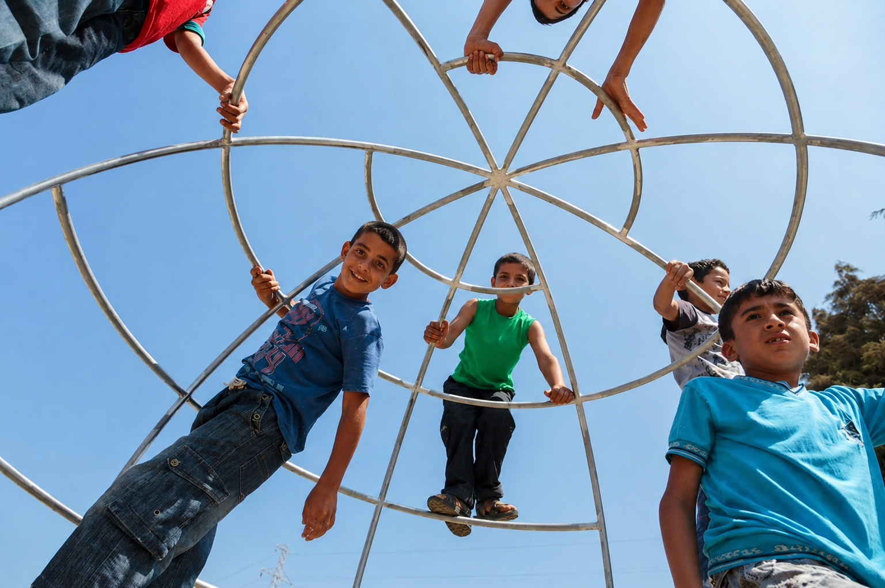

2025–26
Natural Fibers, Earthen Materials & Biodesign
Independent research at the Natural Materials Lab, Columbia GSAPP · New York
Material experiments investigating natural fibre waste as a resource for contemporary earthen construction.
Research, heritage, material, urban and socially engaged design projects, developed across architecture, archaeology and Building Biology.
Selected Project

Selected Project

Selected Project

Selected Project

Selected Project

Selected Project

Selected Research Projects
Independent research at the Natural Materials Lab, Columbia GSAPP · New York
Material experiments investigating natural fibre waste as a resource for contemporary earthen construction.
Research stay and experimental project at the British University in Egypt and the Cairo Branch of the Austrian Archaeological Institute · Cairo
A study linking historical flax knowledge to contemporary earthen-material experiments and additive manufacturing.
Field Architect & Researcher
Fieldwork, documentation and building-material research across the Perge Archaeological Expedition, the Tuşpa Archaeological Excavation, the Arslantepe Archaeological Project, and the archaeological sites of Daskyleion and Küllüoba.
Academic Associate · Academic & International Coordination · Krems an der Donau
Coordinated ComPaRe, an Erasmus+ collaboration on heritage and post-disaster reconstruction, with Accumoli, Italy, as its case study.
Selected Design & Urban Projects
Project Designer · Support to Life · Altınözü
An inclusive ecological playground for refugee and local children, developed with low-cost materials, local craftsmanship and Building Biology principles.
Project Designer · Greenpeace · Istanbul
A low-cost sustainable office prototype in Istanbul’s historic centre, conceived as a model for environmentally responsible workplace design informed by Building Biology principles.
Consultant · UN-Habitat · Gaziantep
A city-level study of urban development, quality of life, infrastructure, equity and environmental sustainability, contributing to the State of the World’s Cities 2012 report.
Practice & Teaching
Project designer at several architecture and design studios, including Dante O. Benini & Partners and Matteo Vercelloni Studio, contributing to design development, technical documentation and material selection.
Adjunct Lecturer in master courses at Istituto Europeo di Design (IED), Milan.
Adjunct Lecturer at multiple institutions, including Istanbul Technical University and Mimar Sinan Fine Arts University, teaching Building Biology, ecological materials, sustainable architecture, and leading design studios.